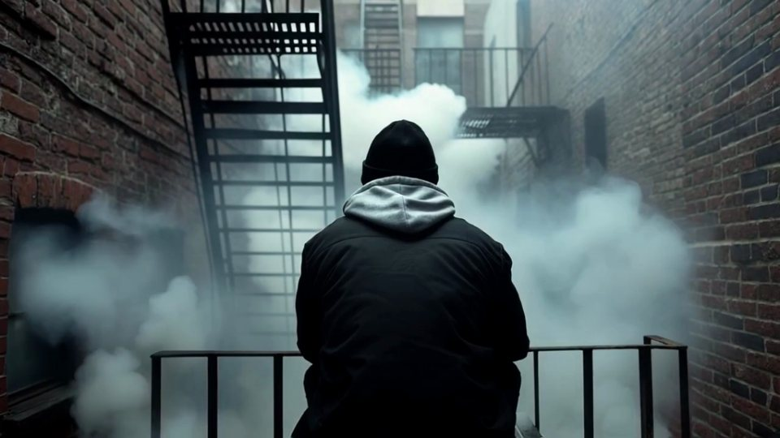
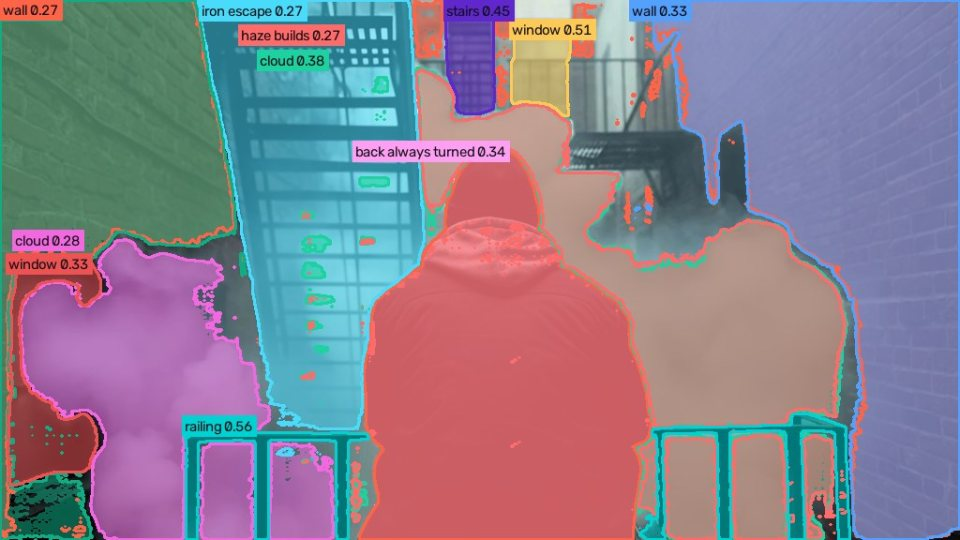
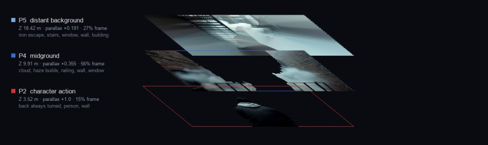
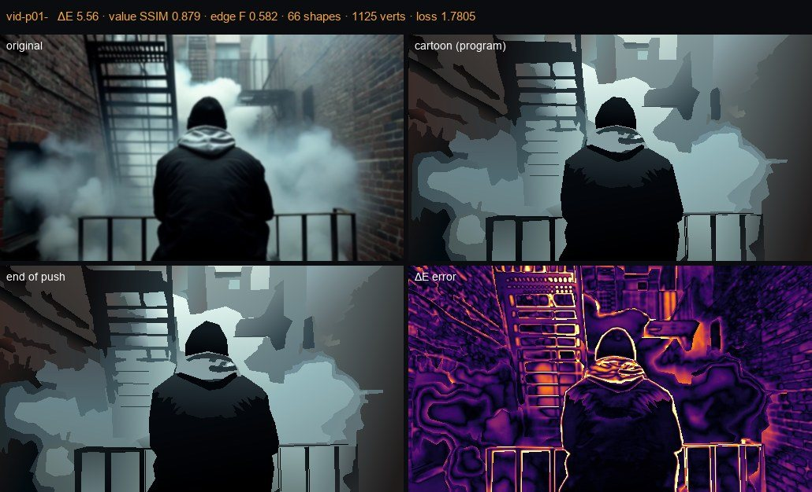
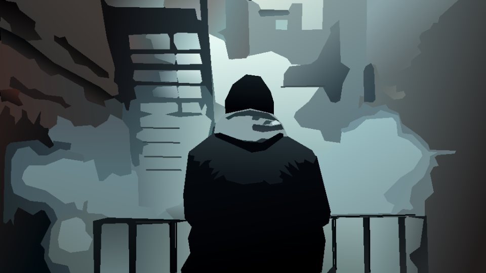
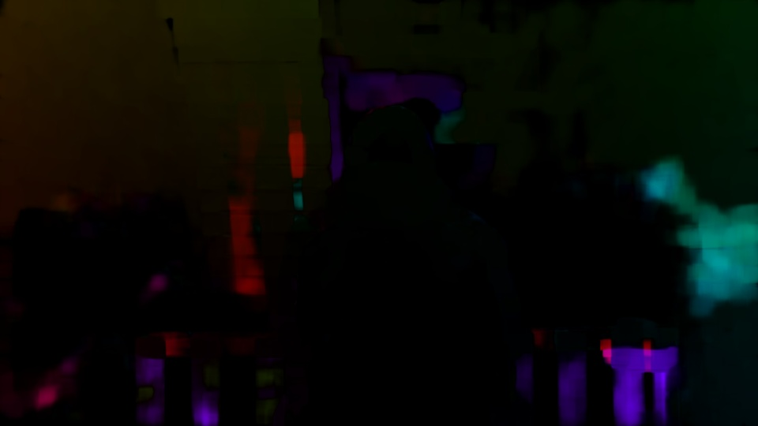
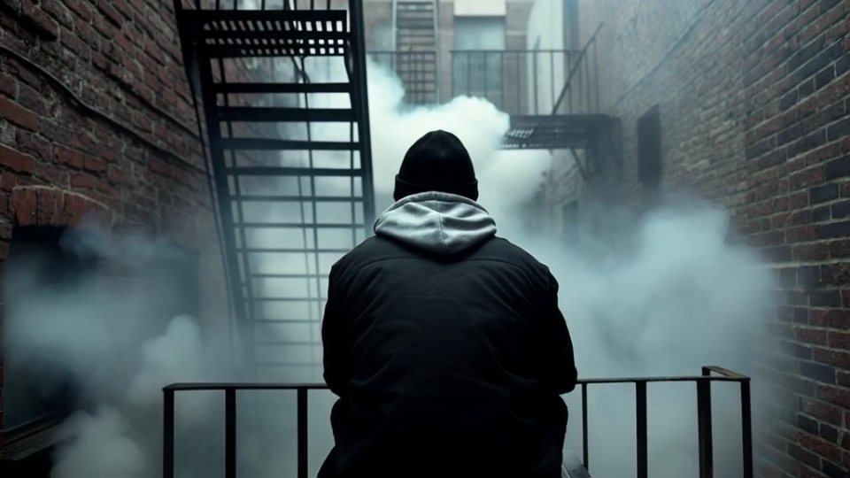
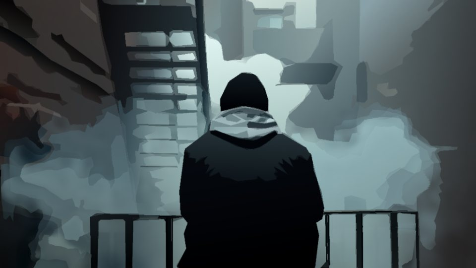
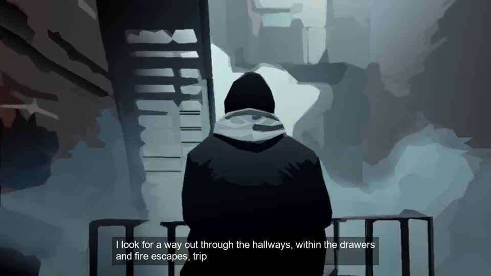

How each frame is made, from the poem to the cel.
Fourteen poems, read aloud; a scene book that says what happens in each; an archive of found film and our own footage; and wygwyl-world-arch’s drawing pipeline. Each poem is carved into short patches on his reading’s clock, each patch is cast one moving shot that means what she is saying, and every frame of that shot is redrawn as an angular cel. Watch the films.
The system model
| 01 Story | the scene book: 90 scenes, 14 transitions; who, what, where, how blocked | scenes.json |
| 02 Clock | his reading: 14 recordings, 2,799 timed words; each scene found on it | timings/NN.json |
| 03 Carve | patches of 6–12 s; a scene edge is a hard cut, inside a scene cuts fall on her breaths | patches + triggers |
| 04 Pool | 53,303 pictures and keyframes in one CLIP space; never the shoot, CAT or cdmx, nor our rendered cuts | emb + inventory |
| 05 Cast | meaning (action, words spoken, place) · a photographed place · the figure · our footage for POET · one register · no reuse (stretch, frame, subject) | one shot per patch |
| 06 Window | the clean in-point: no hard cut inside, judged on the stretch actually probed | clip in + length |
| 07 Keys | a keyframe about every second and at every cut | 1 key / s |
| 08 Read | Grounding DINO on the scene’s words → SAM 2.1 masks · OneFormer ADE20K · Depth Pro (metric depth, focal) · ground plane → camera height, pitch, roll | shot.json |
| 09 Planes | the picture cut into flat sheets at measured depths: P6 sky … P1 foreground, P0 mask | multiplane |
| 10 Draw | the scene program: polygons in the shot’s own colours per plane, refined by render-and-compare (colour ΔE, value SSIM, edges, simplicity) | keyframe cel |
| 11 Carry | the frames between: keyframe cels carried along the footage’s optical flow, on twos (12 fps) | cel frames |
| 12 Assemble | patches in order on his clock, his voice, his line on screen; a card where a patch is still to be made | NN.mp4 |
One frame, every stage · P01-002 · Haze at the window
EX vapes on the fire escape, back always turned; haze builds; POET moves toward the window but the EX gets further away. His words while it is on screen: “I look for a way out through the hallways, within the drawers and fire escapes,”. Source: markov, 20250719_071953_5b9ec655_720p_13s_silent_poet_is_currently_in_a_state_of_you_fall.mp4, 5.4 s from 0.15 s. Keyframe 12 of 6 keys; the in-between shown is frame 18.









Six points of view
The viewer
Can it be watched? Three things broke it: boiling (each keyframe drawn on its own re-cuts the shapes every second), ghosting (in-betweens blended two different drawings), and hidden cuts (montage footage inside one patch). The cuts are fixed: windows are judged only on the stretch actually probed, with a strict test, and the 20 montage patches were re-cast. For boiling and ghosting a second in-betweener carries one drawing at a time and re-keys only when the footage stops fitting (story_inbetween.py); the measures do not yet separate it from the original, so it is compared by eye.
The editor
One patch, one moving shot, on his clock: 167 patches averaging 7.9 s. A shot is never used twice: not the same stretch of a source, not the same frame from another file (our edits re-contain their clips), not the same subject at another moment (CLIP of the frame shown). A source does not return within three patches; colour and black-and-white do not flip inside a poem.
The poem
Every scene is found on the reading by its first line (85 of 90 exactly, the rest between their neighbours); a patch is cast for the words spoken while it is on screen, so the picture follows the line. Transitions carry each poem into the next.
The animator
Cels in the angular style of wygwyl-world-arch: flat polygons in the shot’s own colours, one light, no outlines, cut into planes so they can move at different speeds. 1336 keyframes drawn, the frames between carried by the footage’s motion on twos; a patch with no clean moving footage is a held drawing.
The archivist
68 patches from our own footage (Markov, generated, film, halfworld, Midjourney views), 97 from found film through Cineosis Lab; credits.json lists every patch’s source file, window, and for found film its title and year. Nothing from the shoot, CAT or cdmx is in the pool.
The machine
Where the models fail: Depth Pro reads fog as near-flat; COCO-trained segmenters give up on haze and neon (hence prompt-driven Grounding DINO + SAM); CLIP rates the meaning of collages and ink washes as if they were photographs (hence a pixel test for paper and a list of graphic forms); ffmpeg’s scene test misses fast montage (hence the stricter repair).
Provenance · every patch
Families: archive 97, markov 33, other 21, film 10, halfworld 3, mj 1. The carve matrices for each poem (diagnosis and olog, patch genome, story map, reforge stack with each patch’s Master Patch Prompt) are in carve/; every patch’s source is in credits.json.
| patch | s | scene | family | found film | file | status |
| P01-001 | 0.0-7.8 | The reading | archive | d2d2a17a-3857-5b04-9d46-ebe2869a39d8.mp4 | cel | |
| P01-002 | 7.8-13.2 | Haze at the window | markov | 20250719_071953_5b9ec655_720p_13s_silent_poet_ | cel | |
| P01-003 | 13.2-20.2 | Off the fire escape | other | WGY006_CS__Causal_Motion_Trigger__EX_tumbles_f | cel | |
| P01-004 | 20.2-29.3 | The fall montage | markov | WYGWYL_S04_THE_UNDERGROUND.mp4 | generate | |
| P01-005 | 29.3-39.5 | The fall montage | markov | 20250719_102735_6a9fa071_720p_33s_silent_inter | generate | |
| P01-006 | 39.5-47.5 | The fall montage | markov | WYGWYL_E_THE_DOOR_mareamemory_06_SILENT.mp4 | generate | |
| P01-007 | 47.5-57.1 | Crashing the vintage party | archive | fe240298-c077-53a8-a45b-ac2dc12417ca.mp4 | cel | |
| P01-008 | 57.1-63.6 | Crashing the vintage party | markov | 12-reunion-lead.mp4 | cel | |
| P01-009 | 63.6-69.6 | Crashing the vintage party | archive | Control Your Emotions (1950) | 512cd1d8-7550-5b7e-b318-2f4039407725.mp4 | cel |
| P01-010 | 69.6-79.7 | Crashing the vintage party | other | WGY025_CS__Causal_Motion_Trigger__The_young_PO | cel | |
| P01-011 | 79.7-88.4 | Hole in the floor | other | WGY031_CS__Causal_Motion_Trigger__The_tambouri | cel | |
| P01-012 | 88.4-92.4 | fall into 02 | halfworld | KILL_CALL_MY_BODY_BACK.mp4 | cel | |
| P02-001 | 0.0-9.4 | Falling with headlights off | archive | 8f2b07fc-a832-53fb-87ba-5d87094ef228.mp4 | cel | |
| P02-002 | 9.4-20.7 | Falling with headlights off | markov | 20250719_073830_8aff03e4_720p_13s_silent_here_ | cel | |
| P02-003 | 20.7-27.9 | Eyes dilate | archive | 19112ce1-e20f-5e62-b210-7bf651cbe79d.mp4 | cel | |
| P02-004 | 27.9-34.3 | Eyes dilate | archive | 12c2bfef-621e-5b54-9077-e065a0a240e3.mp4 | cel | |
| P02-005 | 34.3-41.1 | Car pulls up | other | WGY023_RI__Memory_Storage_Retrieval__The_ghost | cel | |
| P02-006 | 41.1-47.9 | Car pulls up | markov | CHURN_11_CATHEDRAL_OF_GLASS.mp4 | cel | |
| P02-007 | 47.9-60.1 | The ghost child | other | WGY024_CS__Causal_Motion_Trigger__The_ghost_ch | cel | |
| P02-008 | 60.1-67.5 | Parents arguing in the car | other | WGY021_RI__Memory_Storage_Retrieval__A_young_P | cel | |
| P02-009 | 67.5-74.9 | Parents arguing in the car | archive | 3f9d9185-c6f4-5e45-a835-0c51bcbc31c1.mp4 | cel | |
| P02-010 | 74.9-81.6 | Tambourine through the window | markov | 09-yet-heard-lead.mp4 | cel | |
| P02-011 | 81.6-85.6 | fly into 03 | archive | 8bf13139-19d6-587d-be6e-b5205d01ca87.mp4 | cel | |
| P03-001 | 0.0-7.6 | Tambourine through the chapel window | other | WGY029_CS__Causal_Motion_Trigger__A_violent_st | cel | |
| P03-002 | 7.6-13.7 | The empty temple | archive | acb645a4-2e2e-5808-a9ba-00544bfca055.mp4 | cel | |
| P03-003 | 13.7-21.5 | The empty temple | archive | 10c897d3-37a0-5876-a431-c92e54d53e27.mp4 | cel | |
| P03-004 | 21.5-28.5 | Gifts at the side doors | other | WGY028_DS__Mood_Environment_Stabilizer__A_time | cel | |
| P03-005 | 28.5-35.7 | The storm | markov | WYGWYL_14POEM_DIRECTORS_CUT.mp4 | cel | |
| P03-006 | 35.7-48.2 | Remnants on the shore | other | WGY030_DS__Mood_Environment_Stabilizer__The_st | cel | |
| P03-007 | 48.2-58.0 | Remnants on the shore | archive | Heritage of Splendor (1963) | 43961de1-02ab-5027-bb98-f40df90d188d.mp4 | cel |
| P03-008 | 58.0-62.5 | Tambourine shatters | other | WGY027_CS__Causal_Motion_Trigger__The_tambouri | cel | |
| P03-009 | 62.5-66.5 | cut into 04 | archive | Moonwalk One, ca. 1970 (1970) | 1d5f1026-d28d-533a-b621-2023523dac38.mp4 | cel |
| P04-001 | 0.0-8.1 | Shore of broken pieces | markov | 04-nevermore-lead.mp4 | cel | |
| P04-002 | 8.1-14.6 | Shore of broken pieces | markov | CHURN_18_SALTWATER_STATIC__THE_LAST_SHANTY.mp4 | cel | |
| P04-003 | 14.6-21.1 | The silence | archive | Watershed wildfire (1958) | 608f2683-528e-5c6a-951c-fe0a5c5a9a0f.mp4 | cel |
| P04-004 | 21.1-24.2 | The heart on the sand | other | WGY035_CS__Causal_Motion_Trigger__A_luminous_h | cel | |
| P04-005 | 24.2-33.5 | Trail up the incline | archive | Fantastic Yellowstone (1997) | f095006e-ffb9-5967-9585-e502fd3b7b7f.mp4 | cel |
| P04-006 | 33.5-44.7 | Trail up the incline | other | WGY036_CS__Causal_Motion_Trigger__POET_follows | generate | |
| P04-007 | 44.7-54.2 | Trail up the incline | archive | Moonwalk One, ca. 1970 (1970) | 5d62ea84-a8ab-5812-b432-2bbf90222573.mp4 | cel |
| P04-008 | 54.2-62.1 | Night garden field | markov | 20251020_032021_badaf97b_720p_5s_audio_sound_d | cel | |
| P04-009 | 62.1-73.1 | Night garden field | other | WGY039_CS__Causal_Motion_Trigger__POET_finds_a | cel | |
| P04-010 | 73.1-82.7 | Searching for hands | archive | 0034.mp4 | cel | |
| P04-011 | 82.7-92.6 | Searching for hands | archive | Eagle Has Landed: The Flight of Apollo 11 (1969) | 6bb6d333-facb-5c4e-b540-0c150f87833b.mp4 | cel |
| P04-012 | 92.6-102.0 | Searching for hands | archive | 8cfad037-81b3-52c9-8b2e-c08684323247.mp4 | cel | |
| P04-013 | 102.0-113.7 | Standing in the field | other | WGY039_CS__Causal_Motion_Trigger__POET_finds_a | cel | |
| P04-014 | 113.7-121.8 | Standing in the field | markov | 11-new-day-lead.mp4 | generate | |
| P04-015 | 121.8-130.9 | Standing in the field | archive | 63092ea7-641d-5054-b856-5ffa901f91a5.mp4 | cel | |
| P04-016 | 130.9-134.9 | walk into 05 | archive | 3f9d9185-c6f4-5e45-a835-0c51bcbc31c1.mp4 | cel | |
| P05-001 | 0.0-4.7 | The field goes still | markov | WYGWYL_S04_THE_UNDERGROUND.mp4 | generate | |
| P05-002 | 4.7-13.9 | Naming stars | markov | 097_P046.mp4 | cel | |
| P05-003 | 13.9-23.2 | Southern-pine basement (memory) | archive | 8cfad037-81b3-52c9-8b2e-c08684323247.mp4 | cel | |
| P05-004 | 23.2-29.8 | Southern-pine basement (memory) | archive | 5b550c27-5073-53ff-a673-9265a61d6a8b.mp4 | cel | |
| P05-005 | 29.8-39.0 | Universes and blessings | other | boy_video.mp4 | cel | |
| P05-006 | 39.0-49.4 | Universes and blessings | other | WGY040_DS__Narrative_Modifier__In_the_still_ni | cel | |
| P05-007 | 49.4-57.4 | Universes and blessings | film | WhereYouGoWhenYouLeave_RESTORED_VOICE.mp4 | cel | |
| P05-008 | 57.4-66.2 | Blood through the hands | archive | 9d71ee79-dc2f-5d62-a958-e17715c14330.mp4 | cel | |
| P05-009 | 66.2-74.1 | Baritone and warning | archive | 131834cc-9116-5c50-8e57-d91a7dc0c537.mp4 | cel | |
| P05-010 | 74.1-78.1 | walk into 06 | archive | Moonwalk One, ca. 1970 (1970) | 1b138e1b-c698-5964-b538-2c3dae65b569.mp4 | cel |
| P06-001 | 0.0-8.2 | The Light Gates open | markov | 05-bloodlines-lead.mp4 | cel | |
| P06-002 | 8.2-16.4 | The Light Gates open | markov | 03-how-to-break-off-an-engagement-lead.mp4 | cel | |
| P06-003 | 16.4-27.6 | Road down, following comets | film | WhereYouGoWhenYouLeave_Version_5.mp4 | cel | |
| P06-004 | 27.6-32.7 | The city rises / here we are all one | markov | ACCUMULATION.mp4 | cel | |
| P06-005 | 32.7-44.4 | Jungle Interface and the heart-scan admission | film | WhereYouGoWhenYouLeave_MORE_DELAY.mp4 | cel | |
| P06-006 | 44.4-52.0 | City Center: all safe | archive | b1ec80f0-d8e5-5c39-931a-34facfd664ee.mp4 | generate | |
| P06-007 | 52.0-63.7 | City Center: all safe | mj | 014.webp | generate | |
| P06-008 | 63.7-75.7 | Narrow streets by candlelight | film | 6028c77a894376be-4.jpg | cel | |
| P06-009 | 75.7-82.9 | Narrow streets by candlelight | markov | WYGWYL_S05_THE_ROOM.mp4 | generate | |
| P06-010 | 82.9-91.5 | Could stay forever, then wandering to the house | film | 9f9badfe9c6b323b-2.jpg | cel | |
| P06-011 | 91.5-100.5 | Could stay forever, then wandering to the house | markov | CHURN_02_NON_ABIDING_FLOW__1.mp4 | cel | |
| P06-012 | 100.5-104.5 | walk into 07 | halfworld | SET_02_CUT_02_QUIET_COMES_THROUGH_THE_BODY.mp4 | cel | |
| P07-001 | 0.0-3.0 | DJ drops in | markov | P066_contrary_WORLD_SUBJECT.mp4 | cel | |
| P07-002 | 3.0-11.9 | Eyes wide shut at the mic | archive | 8bd7cc91-5bda-57cf-96b9-c1af39e8ef7a.mp4 | cel | |
| P07-003 | 11.9-19.4 | Ghosts in the speaker mesh | archive | 6b0de8eb-ef15-52db-bed8-aba78bf9d883.mp4 | cel | |
| P07-004 | 19.4-27.0 | Ghosts in the speaker mesh | archive | 223ce855-b8c6-5152-b147-4f8907dc161f.mp4 | generate | |
| P07-005 | 27.0-34.6 | A thousand light years, into the red | archive | Belmont High School Graduation 06/04/1995 (1995) | 427df750-e95b-5c37-8d71-3c1474700a62.mp4 | generate |
| P07-006 | 34.6-42.1 | A thousand light years, into the red | archive | da69b1ba-1eb8-5072-8cf7-19fc272eba0f.mp4 | cel | |
| P07-007 | 42.1-50.7 | Wedding bands and the boxed home | archive | b89776e6-454a-5cf4-8e9e-20df4be7434c.mp4 | cel | |
| P07-008 | 50.7-59.2 | Wedding bands and the boxed home | archive | 0005.mp4 | cel | |
| P07-009 | 59.2-70.5 | Eleven years in daisy petals | archive | Sound And The Story (1956) | 8f72662b-935a-528c-80a0-52830e8424b3.mp4 | cel |
| P07-010 | 70.5-79.9 | Rain, fog, dim lights, then chin high | film | WhereYouGoWhenYouLeave_Final_WithTitles.mp4 | cel | |
| P07-011 | 79.9-88.5 | Rain, fog, dim lights, then chin high | markov | WYGWYL_S03_THE_FOG.mp4 | cel | |
| P07-012 | 88.5-98.8 | Rain, fog, dim lights, then chin high | archive | Modesta | ef364c61-586e-5a2d-8f40-114e6395d421.mp4 | cel |
| P07-013 | 98.8-102.8 | lift into 08 | archive | Moonwalk One, ca. 1970 (1970) | a75d29ae-14bc-566b-b44d-c44fa51cb74e.mp4 | cel |
| P08-001 | 0.0-6.1 | The soul leaves the dancer | archive | 0087.mp4 | cel | |
| P08-002 | 6.1-16.5 | The soul leaves the dancer | archive | 75721915-a67b-5934-9d4c-961908399960.mp4 | cel | |
| P08-003 | 16.5-24.7 | The soul leaves the dancer | archive | 9cb98c3d-63ac-5319-a5f3-13ac453f24f4.mp4 | cel | |
| P08-004 | 24.7-34.5 | Strangers collide; the last one to leave | archive | 482ef3c2-7967-504a-a664-8e6fbeaebe21.mp4 | cel | |
| P08-005 | 34.5-41.3 | Strangers collide; the last one to leave | archive | 8cfad037-81b3-52c9-8b2e-c08684323247.mp4 | cel | |
| P08-006 | 41.3-49.4 | Soul over Atlantis / the open field at the equator | markov | CHURN_08_DIAL_TONE_ECHOES.mp4 | cel | |
| P08-007 | 49.4-59.5 | Angels' ice-water baptism | archive | NASA Searches for Life from the Moon in Recently Rediscovered Historic Footage (1969) | b4571edd-2f72-5e2e-b095-cd95c8d29583.mp4 | cel |
| P08-008 | 59.5-69.5 | Angels' ice-water baptism | archive | 9c11c901-90c5-5aca-abdb-45bab8e67e74.mp4 | cel | |
| P08-009 | 69.5-81.4 | Haze and the soul's return | film | WhereYouGoWhenYouLeave_Final_WithTitles.mp4 | cel | |
| P08-010 | 81.4-91.5 | Mountains from the rooftop | archive | 80b5da26-cee5-5312-b280-9891a435b36a.mp4 | generate | |
| P08-011 | 91.5-95.5 | walk into 09 | archive | 48dea439-49b0-5cc0-b34a-67e02a833937.mp4 | cel | |
| P09-001 | 0.0-12.6 | The EX in the crowd | markov | 20250719_102441_46782136_720p_31s_silent_inter | generate | |
| P09-002 | 12.6-24.7 | Walking toward the moon | archive | 47e48483-d729-5560-9f3f-563f172c12ca.mp4 | cel | |
| P09-003 | 24.7-35.1 | Walking toward the moon | archive | db650a47-b19a-53ff-a12f-c394742879da.mp4 | cel | |
| P09-004 | 35.1-38.7 | Suitcases at the phone booth | archive | 1d5f1026-d28d-533a-b621-2023523dac38.mp4 | cel | |
| P09-005 | 38.7-38.7 | The call to Mother | markov | b3498275841eddb5-0.jpg | cel | |
| P09-006 | 38.7-47.5 | Father and son to the inner harbor | archive | Bosque del Apache National Wildlife Refuge (2005) | 584a8272-e567-5238-8411-aa6286aeec90.mp4 | cel |
| P09-007 | 47.5-56.0 | Father and son to the inner harbor | other | 0b4d831cefce13c9-0.jpg | generate | |
| P09-008 | 56.0-64.7 | Father and son to the inner harbor | archive | 25b8bdc1-827e-5fe6-89ed-0910afdf92ce.mp4 | cel | |
| P09-009 | 64.7-72.8 | Father and son to the inner harbor | other | WGY032_DS__Mood_Environment_Stabilizer__POET_n | generate | |
| P09-010 | 72.8-79.0 | Father and son to the inner harbor | markov | 20251020_071057_c2a64680_720p_14s_audio_interp | generate | |
| P09-011 | 79.0-87.6 | Father and son to the inner harbor | markov | WYGWYL_J3_TRIUMPH_A_LITTLE_DARK_SILENT.mp4 | cel | |
| P09-012 | 87.6-97.2 | Father and son to the inner harbor | archive | Gouda (1923) | b1ec80f0-d8e5-5c39-931a-34facfd664ee.mp4 | generate |
| P09-013 | 97.2-106.4 | Father and son to the inner harbor | archive | Four in the Cosmos (1969) | 27ef5094-3012-5442-9bd4-9f7a0eaff22e.mp4 | cel |
| P09-014 | 106.4-108.8 | The EX turns to haze | other | dd50826d09d10fe2-1.jpg | cel | |
| P09-015 | 108.8-112.8 | dissolve into 10 | archive | c1e30693-35b6-5d39-9540-a8e1b574c71a.mp4 | cel | |
| P10-001 | 0.0-13.0 | The bike under the street lamp | halfworld | KILL_WRONG_SIDE_OF_THE_BAR.mp4 | cel | |
| P10-002 | 13.0-20.9 | Mounting the machine | archive | Muller en co n.v. Rotterdam (1928) | 9e4c6e92-65c7-58dd-869b-f66e9178a5f1.mp4 | cel |
| P10-003 | 20.9-27.8 | Loneliness through midnight intersections | markov | 20251020_064916_464b4dcc_720p_23s_audio_interp | cel | |
| P10-004 | 27.8-37.9 | Loneliness through midnight intersections | archive | Opening tramlijn naar Wassenaar (1923) | e6a44602-9b01-5030-8818-bf84c347a851.mp4 | cel |
| P10-005 | 37.9-46.2 | Swagger down the avenue | archive | 'Till It Helps! (1959) | 89edb74e-a728-5ca5-8bcf-f53a711f0694.mp4 | cel |
| P10-006 | 46.2-53.3 | Swagger down the avenue | markov | WYGWYL_S06_THE_STILL_WORLD.mp4 | cel | |
| P10-007 | 53.3-54.5 | Out of Atlantis as the moon settles | archive | f6c6c21d-1106-542d-8369-95adfed426c3.mp4 | cel | |
| P10-008 | 54.5-63.5 | Mountain road at first light | archive | 49e405d4-738a-5e32-8875-8196a59e7f46.mp4 | cel | |
| P10-009 | 63.5-70.0 | Mountain road at first light | to make | | to make | |
| P10-010 | 70.0-81.5 | Mountain road at first light | archive | 8bf13139-19d6-587d-be6e-b5205d01ca87.mp4 | generate | |
| P10-011 | 81.5-87.7 | Mountain road at first light | markov | a3885e68c26745e3-0.jpg | cel | |
| P10-012 | 87.7-96.1 | Mountain road at first light | film | 454630af943cdcdb-4.jpg | cel | |
| P10-013 | 96.1-100.1 | ride into 11 | other | HT_header_prompt_with_audio_MISFIT.mp4 | cel | |
| P11-001 | 0.0-10.3 | Arrival on the chilly shore | archive | [Amateur film: "Saga of the Happy Wanderers"] (1957) | 269fcb6c-5faf-5986-b65a-8b1696ef0495.mp4 | cel |
| P11-002 | 10.3-18.5 | Arrival on the chilly shore | archive | THE PHOTOGRAPHER (1948) | 39f40354-a37b-5c4e-a419-29797c1fb2b9.mp4 | cel |
| P11-003 | 18.5-30.4 | Arrival on the chilly shore | archive | 269fcb6c-5faf-5986-b65a-8b1696ef0495.mp4 | cel | |
| P11-004 | 30.4-35.5 | Remnants in the sunlight | archive | d2dacadd-3794-5fcf-ab34-1843914afb45.mp4 | cel | |
| P11-005 | 35.5-42.2 | The temple builds itself | archive | Herinnering uit het leven van onzen grootsten toneelspeler (1919) | 90888279-3d92-5380-b891-83a2a0504f53.mp4 | cel |
| P11-006 | 42.2-48.9 | Choir chords in the new nave (inferred) | archive | 82d6404d-f451-531a-a3f2-0e4eea6fea48.mp4 | cel | |
| P11-007 | 48.9-57.9 | Journal and the lonely mirror (inferred) | archive | 242ff926-624f-534c-9eef-5f671072d426.mp4 | cel | |
| P11-008 | 57.9-66.8 | Journal and the lonely mirror (inferred) | archive | 8bd7cc91-5bda-57cf-96b9-c1af39e8ef7a.mp4 | cel | |
| P11-009 | 66.8-75.7 | Journal and the lonely mirror (inferred) | archive | Going Steady? (1951) | a63266ad-9ff3-55ba-a3d8-368b6b946fa2.mp4 | cel |
| P11-010 | 75.7-85.0 | Welcoming the new day | archive | 41700b15-cd0c-51bd-9885-a81456c8ddff.mp4 | generate | |
| P11-011 | 85.0-93.7 | Welcoming the new day | archive | Moonwalk One, ca. 1970 (1970) | 98ef04be-af1a-520c-990f-9bd8091f2e2f.mp4 | generate |
| P11-012 | 93.7-101.3 | Welcoming the new day | archive | e22008d8-4bd5-526d-8391-a9b123128837.mp4 | generate | |
| P11-013 | 101.3-105.3 | cut into 12 | archive | 7cd6e21b-3ba8-5fe2-a150-3d1d091d5982.mp4 | cel | |
| P12-001 | 0.0-8.6 | Welcome home in the hall | archive | 14954698-d902-595a-ad99-dbc55658e6b1.mp4 | generate | |
| P12-002 | 8.6-12.6 | Loud voices, overheard hearts | archive | 0154.mp4 | cel | |
| P12-003 | 12.6-19.8 | The empty rooms of the afterlife | archive | f67c5db9-b613-5e25-8855-f624d193016e.mp4 | cel | |
| P12-004 | 19.8-26.5 | Hourglasses and the group photo (archival reenactment) | archive | 6f819430-9f47-569e-93aa-5a5ccf94d723.mp4 | generate | |
| P12-005 | 26.5-32.7 | Trees at the forest edge | other | WGY007_DS__Mood_Environment_Stabilizer__A_comp | cel | |
| P12-006 | 32.7-39.9 | Brotherhood chain | archive | 8f85abaf-5c23-5d0c-9024-e3d41de5364c.mp4 | cel | |
| P12-007 | 39.9-47.1 | Brotherhood chain | archive | All My Babies (1953) | 6edf45d5-1aba-5f3b-8e09-8ff6ce297c4e.mp4 | cel |
| P12-008 | 47.1-54.4 | Football in the meadow, then home | archive | e4afd423-11d6-534a-bd39-bbdf6608f65e.mp4 | cel | |
| P12-009 | 54.4-64.8 | Football in the meadow, then home | archive | [Amateur films: Ivan Besse collection: Britton, South Dakota 1938-39] (Part II) (1938) | 2faca583-f0f1-5436-a776-3a80b5a4a36b.mp4 | cel |
| P12-010 | 64.8-68.8 | walk into 13 | archive | bb5b6b1c-afd1-5923-ab19-bfc7e7ebbaff.mp4 | cel | |
| P13-001 | 0.0-9.6 | Walk from the temple around the harbor | archive | c94f7bb9-078a-578f-ada9-24b9ec4bf571.mp4 | cel | |
| P13-002 | 9.6-19.3 | Walk from the temple around the harbor | archive | De Joodsche invalide (1939) | 51865303-297c-540e-97fe-0fdd59024058.mp4 | generate |
| P13-003 | 19.3-21.4 | The corner cafe table | archive | Family Life (1949) | cb6d95da-e002-57ae-97a4-248c8d142beb.mp4 | cel |
| P13-004 | 21.4-29.5 | Distances, younger selves, praying elders | archive | 0151.mp4 | cel | |
| P13-005 | 29.5-35.9 | Distances, younger selves, praying elders | archive | Lens, Hollands dorp in Frankrijk (1921) | 251c8b8b-c672-57cf-91dd-a6af4fc2ea47.mp4 | cel |
| P13-006 | 35.9-44.0 | Victory-less seasons (inner montage) | film | 03_How_to_break_off_an_engagement.mp4 | cel | |
| P13-007 | 44.0-56.1 | Victory-less seasons (inner montage) | archive | 6c23e59a-a049-5e52-b0a8-72bb89e1c2c7.mp4 | cel | |
| P13-008 | 56.1-63.9 | Victory-less seasons (inner montage) | archive | 8a88c574-10a6-5067-a17d-aca1b9624886.mp4 | cel | |
| P13-009 | 63.9-72.8 | Harvesting the poppies | archive | This Is My Railroad (Part I) (1940) | 9ee9b8d8-dbdc-55e5-9103-ab7b93b4609b.mp4 | cel |
| P13-010 | 72.8-80.2 | From a distant window | archive | b8374da1-714b-5fdf-9aa2-13530b94a5c6.mp4 | generate | |
| P13-011 | 80.2-87.7 | From a distant window | archive | 0157.mp4 | cel | |
| P13-012 | 87.7-100.7 | Stands and walks the harbor | archive | Muller en co n.v. Rotterdam (1928) | e5d504ea-4e6e-5e29-a5fc-2401f96f9c74.mp4 | cel |
| P13-013 | 100.7-104.7 | dissolve into 14 | to make | | to make | |
| P14-001 | 0.0-8.1 | Taken by the haze | markov | 173377838e39acdf-0.jpg | cel | |
| P14-002 | 8.1-17.8 | Floating in the black | markov | 20251020_001028_1cdf9a75_draft_5s_audio_interp | generate | |
| P14-003 | 17.8-27.7 | Floating in the black | archive | 69e96a5f-32b3-54ab-8230-bc23c7c07d8d.mp4 | cel | |
| P14-004 | 27.7-40.2 | Cross-cut: highs and lows of life | archive | RCA 16mm Sound Projector, The (1958) | a134989d-5295-5292-ac58-db9d4fa601cb.mp4 | cel |
| P14-005 | 40.2-52.8 | Battle scars and graytones | markov | 20251019_232034_0b99d0ac_draft_5s_audio_sound_ | cel | |
| P14-006 | 52.8-57.0 | The vintage door appears | archive | b01a2151-c5b2-5036-baeb-3eb63ccb084e.mp4 | generate | |
| P14-007 | 57.0-65.5 | The dance at the vintage party | archive | feast.mp4 | cel | |
| P14-008 | 65.5-69.4 | Disappears into the crowd; door closes | archive | 147f497d-6457-5bcd-a1a1-ed98ff0f2505.mp4 | cel | |
| P14-009 | 69.4-73.4 | door into 01 | film | trimmed_14_HM_HotMinute_261200_20250528_2220_B | cel |